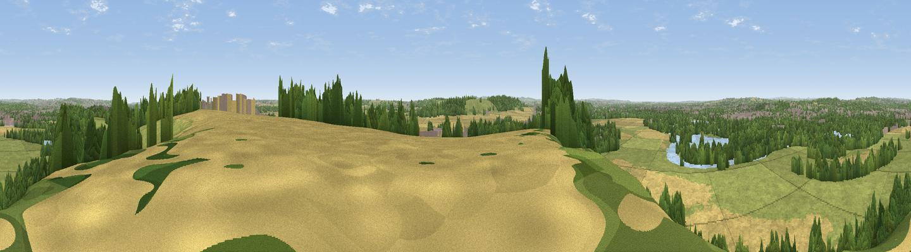

Brands Hill
#14890 in England · top 15% of its area beats it · near Barton-in-FabisWhere it is
The exact computed spot (SK 53275 33475). Click the marker for map links.
The view, rendered

A 360° render of this exact spot computed from the terrain model, tree cover and land cover — summer colours, afternoon light, calibrated against photographs of famous viewpoints. Real trees, hedges and buildings will differ in detail.
The panorama
Grey silhouette: terrain skyline in each direction (720 bearings, Earth curvature and refraction included). Dashed green: skyline with trees (+15 m) and buildings (+8 m) as obstacles. Blue strip: how far the ground is visible on each bearing.
Where the view opens
Wedge length = distance to the farthest visible ground on that bearing (vegetation-aware). Rings at 10, 25 and 50 km.
What fills the view
33% grassland · 32% woodland · 26% cropland · 5% built-up · 4% water
Angular shares of the visible panorama (visual magnitude), not map area. Landscape diversity 0.59 (0–1 Shannon).
Key numbers
More beautiful places nearby
The staircase of upgrades: each row has a higher view potential than everything closer. Driving times are estimates from straight-line distance, calibrated against real road routing — check an actual route before setting out.
| Place | Direction | Drive | Score |
|---|---|---|---|
| Viewpoint near Gotham | S · 2 km | ~6 min | 60.1 |
| No Man's Lane | WNW · 8 km | ~17 min | 65.8 |
| Ives Head | SSW · 17 km | ~30 min | 73.3 |
| Viewpoint near Woodhouse Eaves | S · 19 km | ~32 min | 77.7 |
| Viewpoint near Mow Cop | WNW · 71 km | ~95 min | 78.9 |
| Viewpoint near Mow Cop | WNW · 71 km | ~95 min | 80.2 |
| Viewpoint near Little Wenlock | WSW · 93 km | ~118 min | 84.2 |
| The Wrekin | WSW · 94 km | ~118 min | 85.0 |
52.89609, -1.20952 · source: dobih hill · position refined by local search. Computed location — check access rights before visiting.